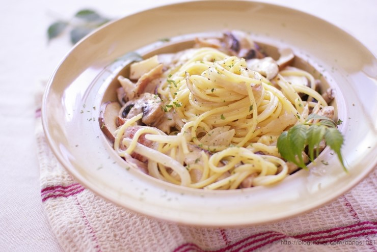

West Food Menu
크림 파스타

재료 : 저염 베이컨 6장, 스파게티 면 2인분, 마늘 4쪽양파(중) 1/3개, 브로콜리 1/5개, 양송이버섯 3개, 올리브유 1큰술,
우유 200ml, 생크림 250ml, 슬라이스 치즈 2장, 소금 후추 약간
①크림 파스타에 들어갈 채소를 손가락 마디 하나 정도의 크기로 썰어주세요.
②베이컨을 먹기 좋은 크기로 썰어주세요.
③달군 프라이팬에 올리브유 1큰술 두르고 마늘과 양파를 넣고 1분간 볶아주세요.
④센 불로 올린 뒤 베이컨, 버섯, 브로콜리를 넣고 고루 익혀주세요.
⑤우유 200ml, 생크림 250ml 넣어 끓어오르면 중불로 맞추고 슬라이스 치즈를 2장 넣고 잘 풀어주세요.
⑥소스가 걸쭉해질 때까지 끓여주세요. 소금을 더해 간을 맞추고 기호에 따라 후추를 넣어주세요.
⑦스파게티 면을 알덴테(7분정도)로 삶아주세요.
⑧소스에 면을 넣고 가볍게 볶아주면 완성.
Mascot

Social Network Service


* 모든요리는 직접 만들어요 *